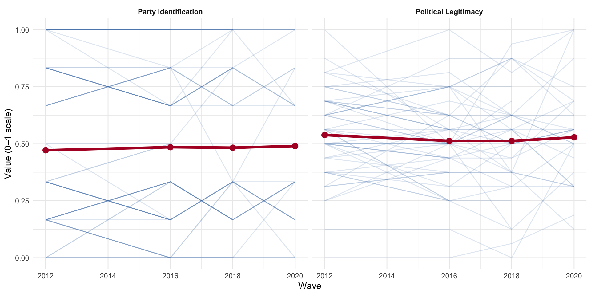
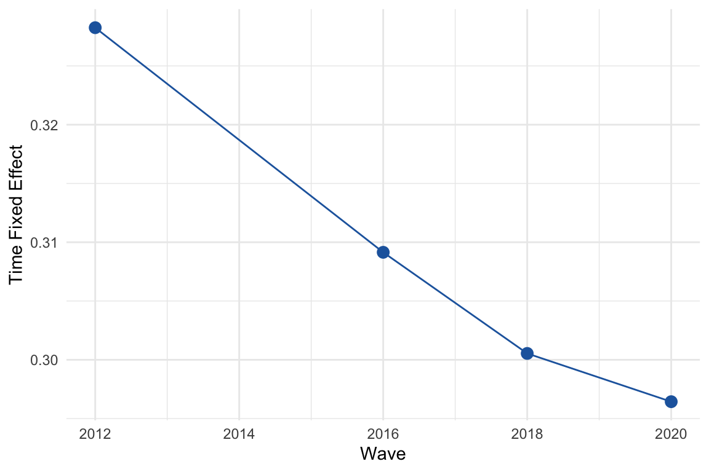
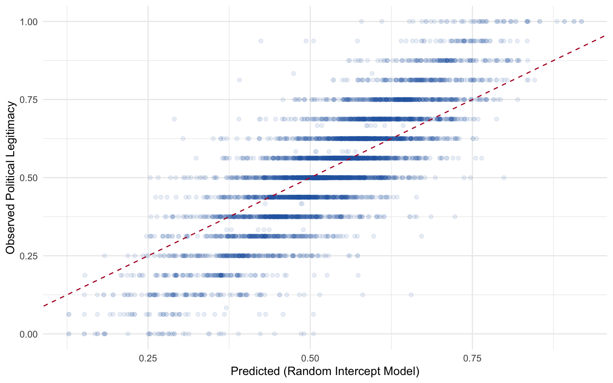
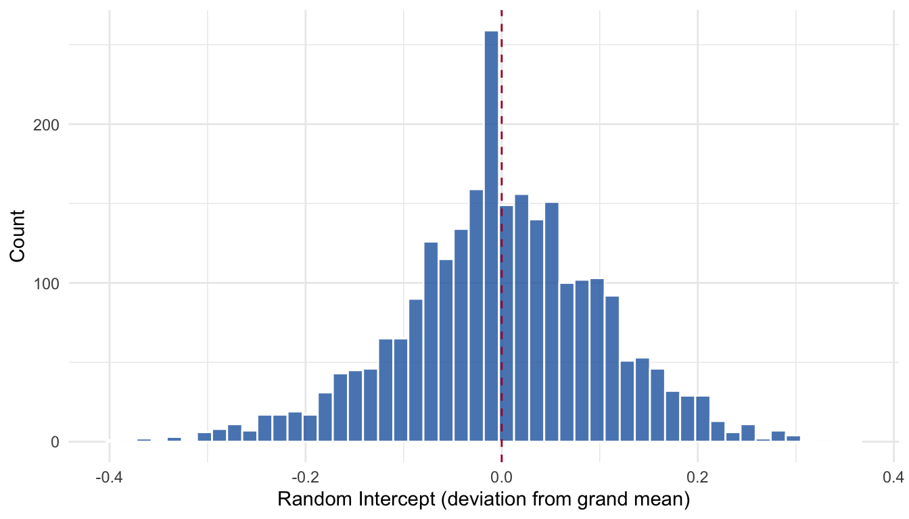
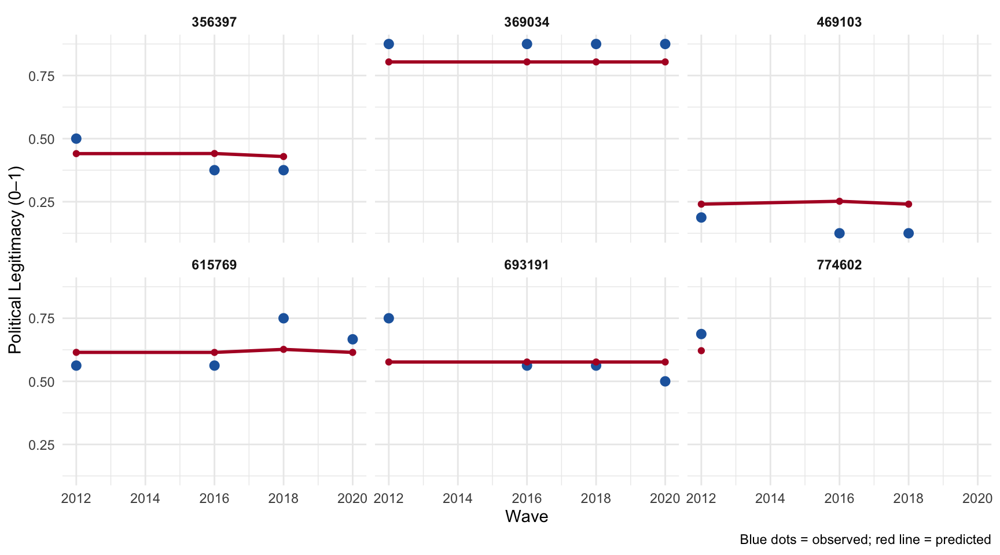

load(here::here("shared/data/upenn.rda"))
cat("Wide format:", nrow(upenn), "respondents,", ncol(upenn), "columns\n")Wide format: 2606 respondents, 41 columnsThe Institute for the Study of Citizens and Politics (ISCAP) at the University of Pennsylvania conducted a multi-wave panel survey spanning 2012, 2016, 2018, and 2020. The same respondents were tracked across these four election cycles, making it an ideal dataset for illustrating the panel data methods from Chapter 9.
The key variables are:
| Variable | Coding |
|---|---|
| Party Identification | 7-point scale (1 = Strong Democrat, 7 = Strong Republican) |
| Ideology | 7-point scale (1 = Extremely Liberal, 7 = Extremely Conservative) |
| Gender | 1 = Female |
| College | 1 = College degree or higher |
| Nonwhite | 1 = Non-white |
| Political Legitimacy | Mean of 4 items (5-point Agree–Disagree scale), rescaled 0–1 |
The legitimacy scale consists of four items: (a) “I would rather live under our system of government than any other,” (b) “At present I feel very critical of our political system,” (c) “The system needs big changes,” and (d) “The system does a good job representing the interests of people like me.”
load(here::here("shared/data/upenn.rda"))
cat("Wide format:", nrow(upenn), "respondents,", ncol(upenn), "columns\n")Wide format: 2606 respondents, 41 columnsThe data are in wide format — one row per respondent, with separate columns for each variable at each wave. We need to reshape to long format for panel analysis.
upenn_long <- upenn |>
pivot_longer(
cols = -identifier,
names_to = c(".value", "wave"),
names_pattern = "(.+)_(\\d{4})$"
) |>
arrange(identifier, wave) |>
mutate(
party_identification = (party_identification - 1) / 6,
ideology = (ideology - 1) / 6,
wave = as.integer(wave)
)
cat("Long format:", nrow(upenn_long), "rows (respondents x waves)\n")Long format: 10424 rows (respondents x waves)head(upenn_long)# A tibble: 6 × 13
identifier wave party_identification ideology female college nonwhite
<dbl> <int> <dbl> <dbl> <dbl> <dbl> <dbl>
1 353 2012 0.333 0.5 0 0 1
2 353 2016 0.167 0.5 0 0 1
3 353 2018 NA NA NA NA NA
4 353 2020 NA NA NA NA NA
5 6134 2012 0.833 0.5 0 0 1
6 6134 2016 0.667 0.5 0 0 1
# ℹ 6 more variables: live_our_government <dbl>, system_needs_changes <dbl>,
# system_represents_interests <dbl>, critical_of_system <dbl>,
# wave_year <dbl>, political_legitimacy <dbl>Before estimating models, let’s look at the data. How stable are party identification and political legitimacy over time?

The spaghetti plot for a random sample of 100 respondents reveals the key pattern: party identification trajectories are nearly flat (high between-person, low within-person variance), while political legitimacy shows substantially more within-person movement.
We can quantify this with the ICC from a null random-intercept model. This is the ANOVA decomposition from Chapter 9 — partitioning total variance into between-person (\(\sigma^2_{b_0}\)) and within-person (\(\sigma^2_y\)) components:
\[ \text{ICC} = \frac{\sigma^2_{b_0}}{\sigma^2_{b_0} + \sigma^2_y} \]
m_party <- lmer(party_identification ~ 1 + (1 | identifier),
REML = FALSE, data = upenn_long)
m_legit <- lmer(political_legitimacy ~ 1 + (1 | identifier),
REML = FALSE, data = upenn_long)
icc_from_lmer <- function(fit) {
vc <- as.data.frame(VarCorr(fit))
between <- vc$vcov[vc$grp == "identifier"]
within <- vc$vcov[vc$grp == "Residual"]
data.frame(between_var = between, within_var = within,
total_var = between + within,
ICC = between / (between + within))
}
icc_tbl <- bind_rows(
cbind(variable = "Party Identification", icc_from_lmer(m_party)),
cbind(variable = "Political Legitimacy", icc_from_lmer(m_legit))
)
knitr::kable(icc_tbl, digits = 3,
col.names = c("Variable", "Between (σ²_{b₀})", "Within (σ²_y)",
"Total", "ICC"))| Variable | Between (σ²_{b₀}) | Within (σ²_y) | Total | ICC |
|---|---|---|---|---|
| Party Identification | 0.110 | 0.020 | 0.130 | 0.848 |
| Political Legitimacy | 0.016 | 0.016 | 0.032 | 0.512 |
Party identification is overwhelmingly between-person variation — most of the action is stable trait differences across individuals. Political legitimacy is less stable, with more wave-to-wave fluctuation.
As a baseline, we ignore the panel structure entirely and fit a pooled OLS regression predicting political legitimacy from party identification and demographics:
fit_pooled <- lm(political_legitimacy ~ party_identification +
female + college + nonwhite,
data = upenn_long)
summary(fit_pooled)
Call:
lm(formula = political_legitimacy ~ party_identification + female +
college + nonwhite, data = upenn_long)
Residuals:
Min 1Q Median 3Q Max
-0.55927 -0.09572 -0.01242 0.10604 0.49238
Coefficients:
Estimate Std. Error t value Pr(>|t|)
(Intercept) 0.507623 0.005367 94.589 < 2e-16 ***
party_identification 0.034023 0.006410 5.308 1.15e-07 ***
female 0.002915 0.004457 0.654 0.51313
college 0.001885 0.004742 0.398 0.69100
nonwhite 0.014705 0.005178 2.840 0.00453 **
---
Signif. codes: 0 '***' 0.001 '**' 0.01 '*' 0.05 '.' 0.1 ' ' 1
Residual standard error: 0.1776 on 6415 degrees of freedom
(4004 observations deleted due to missingness)
Multiple R-squared: 0.004721, Adjusted R-squared: 0.0041
F-statistic: 7.607 on 4 and 6415 DF, p-value: 4.131e-06The pooled model treats all observations as independent — which we know they are not. The standard errors are almost certainly too small.
The fixed effects model removes all between-person variation by demeaning within each individual. This eliminates time-invariant confounders (race, gender, etc.) but also prevents us from estimating their effects. We use the plm package:
upenn_plm <- pdata.frame(upenn_long, index = c("identifier", "wave"))
fit_fe <- plm(political_legitimacy ~ party_identification + ideology,
data = upenn_plm, model = "within")
summary(fit_fe)Oneway (individual) effect Within Model
Call:
plm(formula = political_legitimacy ~ party_identification + ideology,
data = upenn_plm, model = "within")
Unbalanced Panel: n = 2565, T = 1-4, N = 6351
Residuals:
Min. 1st Qu. Median 3rd Qu. Max.
-0.584469 -0.048158 0.000000 0.048231 0.543540
Coefficients:
Estimate Std. Error t-value Pr(>|t|)
party_identification 0.016862 0.014408 1.1703 0.2420
ideology 0.027844 0.020499 1.3583 0.1744
Total Sum of Squares: 58.212
Residual Sum of Squares: 58.156
R-Squared: 0.00095489
Adj. R-Squared: -0.67652
F-statistic: 1.80839 on 2 and 3784 DF, p-value: 0.16406Notice that female, college, and nonwhite cannot appear here — they are time-invariant and are absorbed by the individual fixed effects. The within estimator tells us: when a person’s party identification shifts, how does their legitimacy perception change?
# Extract the individual fixed effects
fe <- fixef(fit_fe)
cat("Number of individual fixed effects:", length(fe), "\n")Number of individual fixed effects: 2565 cat("Mean:", round(mean(fe), 3), " SD:", round(sd(fe), 3), "\n")Mean: 0.509 SD: 0.157 The one-way fixed effects model above absorbs all individual-level confounders, but it does not account for shocks that affect everyone simultaneously — elections, recessions, political crises, etc. A two-way fixed effects (TWFE) model adds period (wave) fixed effects alongside individual fixed effects:
\[ y_{it} = \alpha_i + \lambda_t + \mathbf{x}_{it}'\boldsymbol{\beta} + \varepsilon_{it} \]
where \(\alpha_i\) captures time-invariant individual heterogeneity and \(\lambda_t\) captures shocks common to all individuals at time \(t\). In plm, we specify effect = "twoways":
fit_twfe <- plm(political_legitimacy ~ party_identification + ideology,
data = upenn_plm, model = "within", effect = "twoways")
summary(fit_twfe)Twoways effects Within Model
Call:
plm(formula = political_legitimacy ~ party_identification + ideology,
data = upenn_plm, effect = "twoways", model = "within")
Unbalanced Panel: n = 2565, T = 1-4, N = 6351
Residuals:
Min. 1st Qu. Median 3rd Qu. Max.
-0.558534 -0.049175 0.000000 0.047385 0.521690
Coefficients:
Estimate Std. Error t-value Pr(>|t|)
party_identification 0.022500 0.014227 1.5815 0.11385
ideology 0.038854 0.020269 1.9170 0.05532 .
---
Signif. codes: 0 '***' 0.001 '**' 0.01 '*' 0.05 '.' 0.1 ' ' 1
Total Sum of Squares: 56.654
Residual Sum of Squares: 56.551
R-Squared: 0.0018299
Adj. R-Squared: -0.67638
F-statistic: 3.46583 on 2 and 3781 DF, p-value: 0.031346The time fixed effects absorb any wave-specific level shifts — for example, a general decline in legitimacy perceptions during the Trump era. We can test whether the time fixed effects are jointly significant with an F-test comparing the one-way and two-way models:
pFtest(fit_twfe, fit_fe)
F test for twoways effects
data: political_legitimacy ~ party_identification + ideology
F = 35.788, df1 = 3, df2 = 3781, p-value < 2.2e-16
alternative hypothesis: significant effectsA significant result tells us that the common time shocks matter and should be included. We can also inspect the estimated time effects to see how legitimacy shifted across waves after conditioning on individual heterogeneity and the time-varying covariates:
time_fe <- fixef(fit_twfe, effect = "time")
time_df <- data.frame(wave = as.numeric(names(time_fe)),
effect = as.numeric(time_fe))
ggplot(time_df, aes(x = wave, y = effect)) +
geom_point(size = 3, color = az_blue) +
geom_line(color = az_blue) +
labs(x = "Wave", y = "Time Fixed Effect") +
theme_minimal()
The random effects model treats the individual intercepts as draws from a normal distribution rather than fixed parameters. This is more efficient than fixed effects if the individual effects are uncorrelated with the regressors — a strong assumption, but one that allows us to include time-invariant predictors.
Using plm:
fit_re <- plm(political_legitimacy ~ party_identification + ideology +
female + college + nonwhite,
data = upenn_plm, model = "random")
summary(fit_re)Oneway (individual) effect Random Effect Model
(Swamy-Arora's transformation)
Call:
plm(formula = political_legitimacy ~ party_identification + ideology +
female + college + nonwhite, data = upenn_plm, model = "random")
Unbalanced Panel: n = 2565, T = 1-4, N = 6351
Effects:
var std.dev share
idiosyncratic 0.01537 0.12397 0.495
individual 0.01568 0.12520 0.505
theta:
Min. 1st Qu. Median Mean 3rd Qu. Max.
0.2964 0.4265 0.5037 0.4892 0.5563 0.5563
Residuals:
Min. 1st Qu. Median Mean 3rd Qu. Max.
-0.52751 -0.06887 -0.00169 -0.00015 0.07448 0.48463
Coefficients:
Estimate Std. Error z-value Pr(>|z|)
(Intercept) 0.4833720 0.0083559 57.8482 < 2.2e-16 ***
party_identification 0.0014812 0.0090927 0.1629 0.87060
ideology 0.0693758 0.0127866 5.4257 5.774e-08 ***
female 0.0077527 0.0060497 1.2815 0.20002
college 0.0048563 0.0062591 0.7759 0.43782
nonwhite 0.0160004 0.0066370 2.4108 0.01592 *
---
Signif. codes: 0 '***' 0.001 '**' 0.01 '*' 0.05 '.' 0.1 ' ' 1
Total Sum of Squares: 112.11
Residual Sum of Squares: 98.077
R-Squared: 0.12519
Adj. R-Squared: 0.1245
Chisq: 45.8457 on 5 DF, p-value: 9.7631e-09And equivalently using lme4:
fit_ri <- lmer(political_legitimacy ~ party_identification + ideology +
female + college + nonwhite + (1 | identifier),
REML = FALSE, data = upenn_long)
summary(fit_ri)Linear mixed model fit by maximum likelihood ['lmerMod']
Formula: political_legitimacy ~ party_identification + ideology + female +
college + nonwhite + (1 | identifier)
Data: upenn_long
AIC BIC logLik -2*log(L) df.resid
-5378.1 -5324.0 2697.0 -5394.1 6343
Scaled residuals:
Min 1Q Median 3Q Max
-4.2724 -0.4858 -0.0163 0.5120 4.1355
Random effects:
Groups Name Variance Std.Dev.
identifier (Intercept) 0.01581 0.1257
Residual 0.01542 0.1242
Number of obs: 6351, groups: identifier, 2565
Fixed effects:
Estimate Std. Error t value
(Intercept) 0.483389 0.008359 57.832
party_identification 0.001519 0.009090 0.167
ideology 0.069300 0.012784 5.421
female 0.007761 0.006053 1.282
college 0.004856 0.006262 0.775
nonwhite 0.016008 0.006639 2.411
Correlation of Fixed Effects:
(Intr) prty_d idelgy female colleg
prty_dntfct -0.143
ideology -0.577 -0.534
female -0.445 0.045 0.029
college -0.304 0.012 0.064 0.041
nonwhite -0.311 0.194 0.012 0.028 -0.161The lme4 model gives us the variance components directly: how much residual variation is between-person vs. within-person after conditioning on the predictors. Compare the residual ICC to the null model — it should be smaller now that we’ve included covariates.
The Hausman test checks whether the random effects assumption — that individual effects are uncorrelated with the regressors — is defensible:
# For the Hausman test, both models must have the same regressors
# (only time-varying ones)
fit_fe_h <- plm(political_legitimacy ~ party_identification + ideology,
data = upenn_plm, model = "within")
fit_re_h <- plm(political_legitimacy ~ party_identification + ideology,
data = upenn_plm, model = "random")
phtest(fit_fe_h, fit_re_h)
Hausman Test
data: political_legitimacy ~ party_identification + ideology
chisq = 11.186, df = 2, p-value = 0.003724
alternative hypothesis: one model is inconsistentA significant Hausman test suggests the random effects estimator is inconsistent — the individual effects are correlated with the regressors — and fixed effects should be preferred.
One advantage of the random effects / multilevel approach is that we get individual-specific predictions that reflect partial pooling. Let’s generate predictions from the lme4 model and compare them to the observed values:
complete_idx <- complete.cases(upenn_long[, c("political_legitimacy", "party_identification",
"ideology", "female", "college", "nonwhite")])
pred_df <- upenn_long[complete_idx, ]
pred_df$predicted <- predict(fit_ri)
ggplot(pred_df, aes(x = predicted, y = political_legitimacy)) +
geom_point(alpha = 0.1, color = az_blue) +
geom_abline(slope = 1, intercept = 0, linetype = "dashed", color = az_red) +
labs(x = "Predicted (Random Intercept Model)",
y = "Observed Political Legitimacy") +
theme_minimal()

The random intercepts capture the stable between-person differences in political legitimacy — exactly the “trait” component we discussed in Chapter 9. Individuals with positive intercepts tend to view the political system more favorably than predicted by their covariates alone; those with negative intercepts are systematically more critical.

This application illustrates the core panel data methods from Chapter 9 on real data: